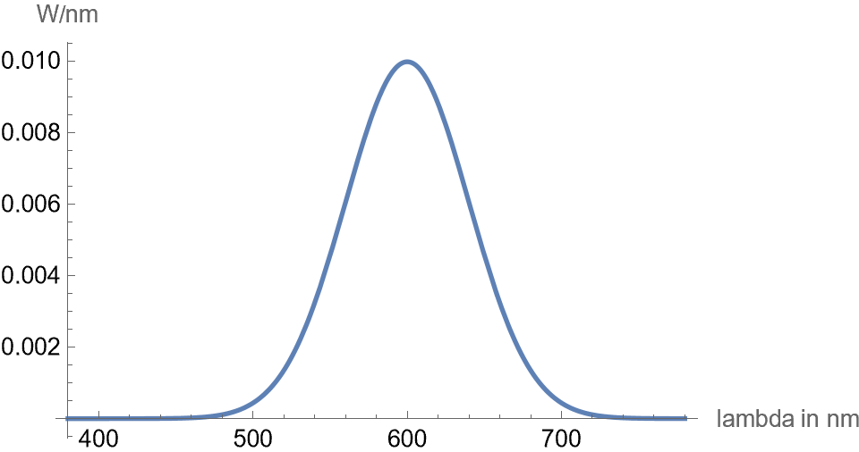
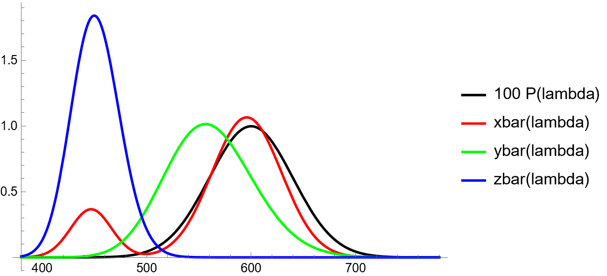

2 Sheet 2
2.1 Assignment 1
- Vector-based advantages:
- resolution independent
- Vector-based disadvantages:
- image build-up is difficult in complex scenes
- Raster-based advantages:
- repeated image build-up independent of scene complexity
- Raster-based disadvantages:
- Moire effects due to finite number of pixels
- Vector-based advantages:
- a spectral color, or a monochromatic color, is light produced by the light of single wavelength in the visible spectrum
- mach bands are an optical illusion where we perceive extra-bright and extra-dark bands near the boundary between two regions with different luminance gradients
a receptive field have usually a center-surround structure where light in the center excites a neuron, while the light in the surrounding region inhibits it, or vice versa.
Mach bands arise because these center-surround receptive fields perform a local constrast enhancement. Near a luminance edge, one receptive field may receive more excitation than inhibition, making the side look brither, or vice versa. e) three operations: i)
relation to YIQ
in the YIQ model the Y channel is calculated approximately as:
Y = 0.3 R + 0.6G + 0.1 B
where we see that green contributes the most and blue the least. This corresponds roughly to the human perception of brightness - it is strongest around green-yellow region and weakeste in the blue region, due to S cells contributing close to nothing to the perception of brightness.
I and Q channels carry color-difference information. They do not correspond exactly to the biological opponent channels, but they similarly separate color information from brithness detail - human eye is much more sensitive to contrast than to color difference
- The light spectrum is given as
\[ P(\lambda) = \frac{1}{\sqrt{2\pi\sigma^2}}\text{exp}\biggl(-\frac{(\lambda - \mu)^2}{2\sigma^2}\biggr) W \]
Is a Guassian / normal distribution shape:

And the color matching functions are given as:
\[ \bar{x}(\lambda) = 1.065 \exp\left( -\frac{1}{2} \left( \frac{\lambda - 595.8}{33.33} \right)^2 \right) + 0.366 \exp\left( -\frac{1}{2} \left( \frac{\lambda - 446.8}{19.44} \right)^2 \right) \]
\[ \bar{y}(\lambda) = 1.014 \exp\left( -\frac{1}{2} \left( \frac{\ln \lambda - \ln 556.3}{0.075} \right)^2 \right) \]
\[ \bar{z}(\lambda) = 1.839 \exp\left( -\frac{1}{2} \left( \frac{\ln \lambda - \ln 449.8}{0.051} \right)^2 \right) \]
which can be plotted as follows (together with a scaled version of \(P(\lambda)\)):

To compute \(X, Y, Z\) we compute the integrals:
\[ \begin{aligned} X &= \int_{\lambda} \bar{x}(\lambda)\,P(\lambda)\,d\lambda, \\ Y &= \int_{\lambda} \bar{y}(\lambda)\,P(\lambda)\,d\lambda, \\ Z &= \int_{\lambda} \bar{z}(\lambda)\,P(\lambda)\,d\lambda. \end{aligned} \]
We can use a symbolic or numerical mathematics software. In our case we used mathematica where we computed the integrals with the following code:
First we define the functions:
sigma = 40;
mu = 600;
P[lambda_] := 1/Sqrt[2 Pi sigma^2] Exp[-(lambda - mu)^2/(2 sigma^2)];
xbar[lambda_] :=
1.065 Exp[-1/2 ((lambda - 595.8)/33.33)^2] +
0.366 Exp[-1/2 ((lambda - 446.8)/19.44)^2];
ybar[lambda_] :=
1.014 Exp[-1/2 ((Log[lambda] - Log[556.3])/0.075)^2];
zbar[lambda_] :=
1.839 Exp[-1/2 ((Log[lambda] - Log[449.8])/0.051)^2];Then we compute the integrals with:
X = NIntegrate[xbar[lambda] P[lambda], {lambda, 380, 780}];
Y = NIntegrate[ybar[lambda] P[lambda], {lambda, 380, 780}];
Z = NIntegrate[zbar[lambda] P[lambda], {lambda, 380, 780}];and find
\[ \begin{aligned} X &\approx 0.679966 \\ Y &\approx 0.569252 \\ Z &\approx 0.00561767 \end{aligned} \]
and finally we compute the \(x, y\) values as:
\[ \begin{aligned} x &= \frac{X}{X + Y + Z} \approx 0.541881\\ y &= \frac{Y}{X + Y + Z} \approx 0.453642\\ \end{aligned} \]
To compute linear RGB from XYZ we use the following linear transformation:
\[ \begin{pmatrix} R_{\mathrm{lin}} \\ G_{\mathrm{lin}} \\ B_{\mathrm{lin}} \end{pmatrix} = \begin{pmatrix} 3.2406 & -1.5372 & -0.4986 \\ -0.9689 & 1.8758 & 0.0415 \\ 0.0557 & -0.2040 & 1.0570 \end{pmatrix} \begin{pmatrix} X \\ Y \\ Z \end{pmatrix}. \]
We achieve this with the following mathematica code:
XYZtoLinearSRGB[{X_, Y_, Z_}] := {
3.2406 X - 1.5372 Y - 0.4986 Z,
-0.9689 X + 1.8758 Y + 0.0415 Z,
0.0557 X - 0.2040 Y + 1.0570 Z
}
{R, G, B} = XYZtoLinearSRGB[{X, Y, Z}]and obtain:
\[ \begin{aligned} R &\approx 1.33 \\ G &\approx 0.41 \\ B &\approx -0.07 \end{aligned} \]
Here R and B are outside of representable RGB gamut. Clipping them we get
\[ \begin{aligned} R &\approx 1 \\ G &\approx 0.41 \\ B &\approx 0 \end{aligned} \]
Converting this to \([0,255]\) scale we get
\[ (R, G, B) = (255, 171, 0) \]
This is a bright yellow-orange color, with no blue